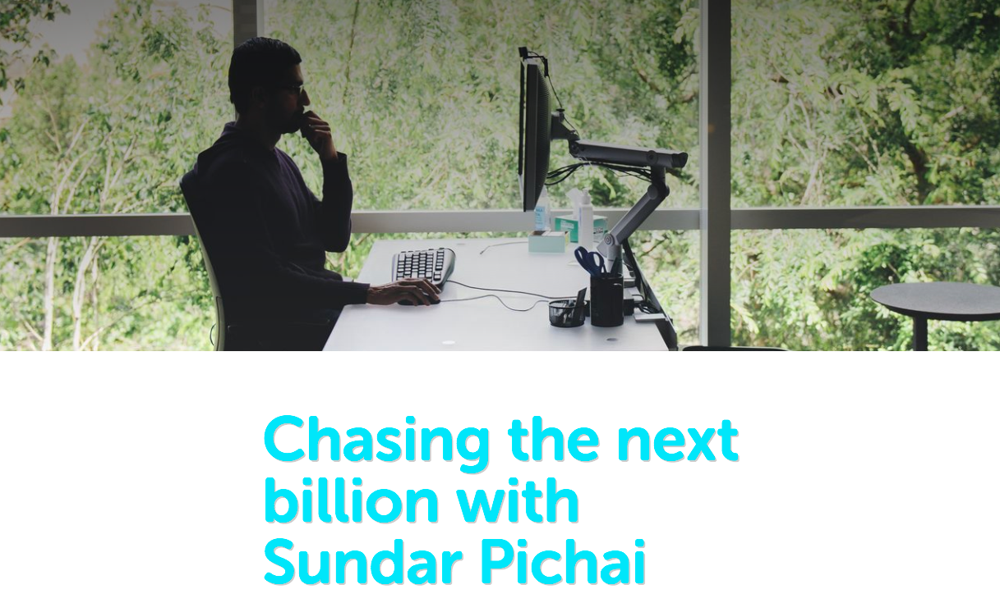

Un nuevo comienzo
- 0 0
-
shares
Cuando empecé TierraAndroid, el mundo de Google y su plataforma móvil estaban al tope del juego, parecía en ese entonces que lo único que quedaba para el equipo de Sundar Pichai era subir y seguir subiendo, e incluso, Google mismo movió iniciativas con otros sitios, caracterizadas por el tema más candente del momento: El siguiente "billón" de instalaciones de la Plataforma.

Si bien estamos a poco menos de dos años de dicho movimiento , una cosa es clara, Android ya no es lo que era antes.
La tecnología sigue cambiando, este CES 2017 es la muestra de eso y aunque todas las plataformas sigan creciendo, hoy más que nunca creo que el terminal que tengas, no afecta en nada tu experiencia de usuario.
Llegamos al tan esperado sueño, los terminales budget son lo más buscado, un teléfono de $99 dólares chino o no, puede darte una excelente experiencia de usuario que hace 2 años solamente hubiéramos soñado.
Hoy Sundar Pichai dijo que el siguiente margen de teléfonos baratos serían $30 dólares, y ya veremos en 2 años, para ese entonces, estoy muy seguro, que lo lograrán.
Con esto, decidimos empezar desde nuevo, un nuevo comienzo, enfocado en otro aspecto que quizás no a muchos les interese, pero que poco a poco tomará fuerza, lifestyle gadgets. Si, esos aspectos de la domótica, cultura popular y redes sociales que poco a poco evolucionarán de ser un nicho a ser nuestro siguiente estilo de vida.
En lo que eso sucede, esto es Rockett.io